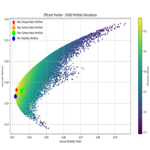
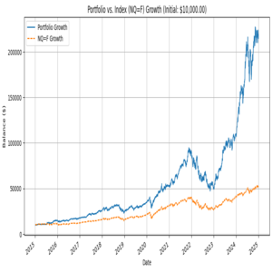
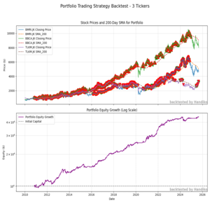
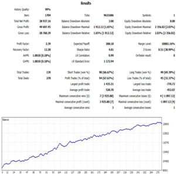
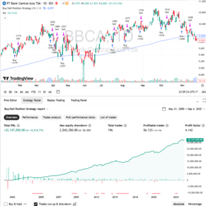
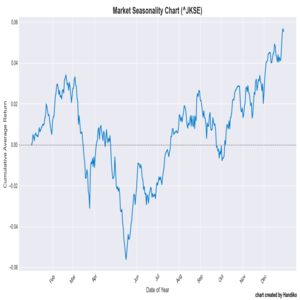
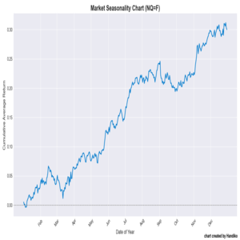
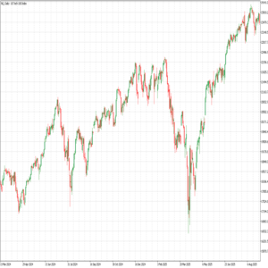
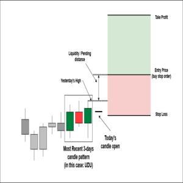
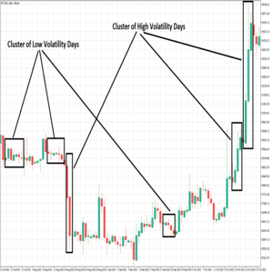

Projects

Trading Strategy Development Example
Developing a real-world trading strategy based on the insights from our Markov Chain study. The strategy presented is a live trading strategy that I personally use, with only minor parameter differences from my own settings.
View Project
Multi-Criteria Optimal Portfolio Allocation
This project provides a robust Python solution for determining optimal portfolio allocations based on a set of user-defined stock tickers and historical data. Utilizing the Monte Carlo Simulation technique, this tool identifies portfolios that excel across several key risk-adjusted metrics, moving beyond just the traditional Sharpe Ratio to offer a more nuanced view of capital efficiency and risk management.
View Project
Quantitative Portfolio Performance Simulation and Analysis
This repository hosts a robust Python simulation designed to quantitatively backtest the performance of a custom-defined stock portfolio against a major market index over a specified historical period. The portfolio's asset allocation—defined by the stock tickers and their corresponding weights—is sourced directly from a data-driven Optimal Portfolio Allocation model developed in a prior project.
View Project
200-SMA and 2-RSI Trading Strategy
Python script to implement a backtesting simulation for a simple trading strategy using two common technical indicators: the 200-day Simple Moving Average (SMA) and a 2-period Relative Strength Index (RSI). The strategy is designed to identify and capitalize on potential buy and sell signals based on the confluence of these indicators.
View Project
Portfolio Trading Strategy Backtester
Python script to implement and backtests a multi-asset trading strategy on a portfolio of many different stock tickers. It leverages common technical indicators to generate buy and sell signals and simulates portfolio performance over historical data.
View Project
Improvement to an Existing Strategy
An Example of How to Improve the Existing Trading Strategy in MQL5
View Project
RSI-2 Stock Trading Strategy Pinescript Version
This repository contains a simple, yet robust, Pine Script trading strategy designed for use on TradingView. The strategy combines two popular technical indicators—a long-term Exponential Moving Average (EMA) for trend identification and a short-term Relative Strength Index (RSI) for entry signals—to manage buy and sell positions
View Project
Market Seasonality Chart Generator
Generating "Market Seasonality" Chart for Any Market listed on Yahoo Finance
View Project
Monthly Seasonality Trading Strategy Backtest
Python script designed to backtest a monthly seasonality trading strategy for a given stock or financial instrument. A "monthly seasonality strategy" is a simple trading approach that takes advantage of historical patterns where a security's price tends to perform better during specific months of the year.
View Project
Price Data Downloader and Converter
Download and convert price data from Yahoo Finance into Metatrader 5 daily bar format
View Project
Using Markov Chain to Analyze a Forex Pair
Using markov chain to analyze first insight of a forex pair, index, or any market
View Project
Markov Chain to Determine Market Risk
Demonstration of assessing market volatility risk using Markov Chain
View Project